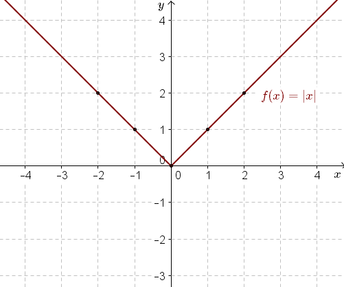
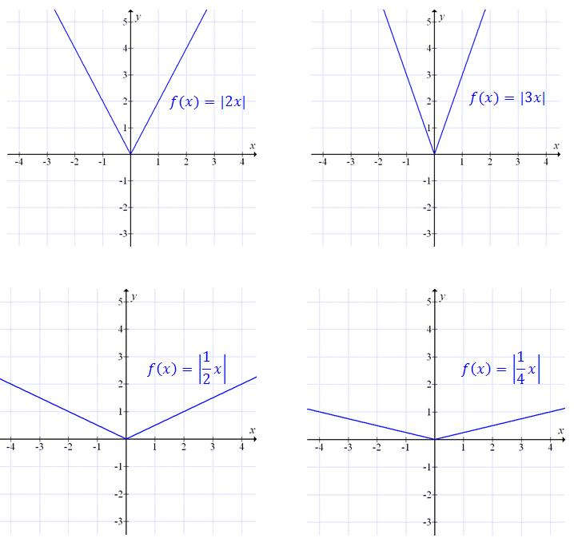
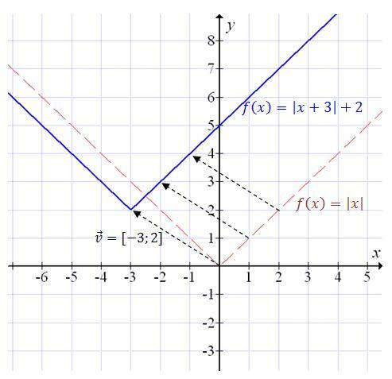

Narysujemy najpierw wykres funkcji \[f(x)=|x|\] Możemy dla ułatwienia sporządzić
odpowiednią tabelkę:
| \(x\) |
\(-2\) |
\(-1\) |
\(0\) |
\(1\) |
\(2\) |
| \(f(x)=|x|\) |
\(2\) |
\(1\) |
\(0\) |
\(1\) |
\(2\) |
Teraz zaznaczymy wyznaczone punkty w układzie współrzędnych i narysujemy wykres:  Bardzo podobnie wyglądają wykresy
funkcji \(f(x) = |ax|\), gdzie \(a\) to dowolna liczba, np:  Żeby narysować wykres funkcji \[f(x) = a|x + b| + c\] to należy
przesunąć wykres funkcji \(f(x) = a|x|\) o wektor
\([-b, c]\).
Narysujemy wykres funkcji \(f(x) = |x + 3| + 2\).
Musimy zatem
przesunąć wykres funkcji \(f(x) = |x|\) o wektor \([-3, 2]\). 